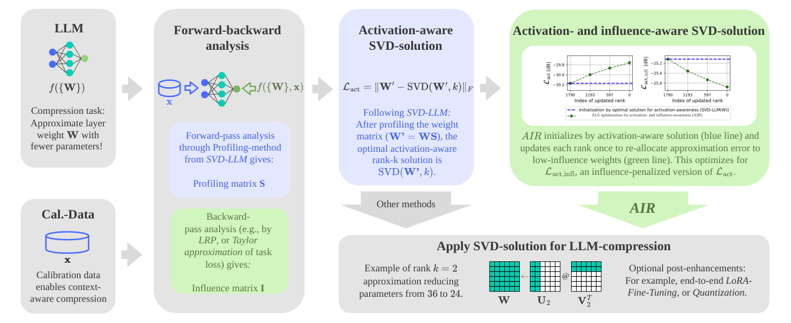

Why it matters왜 중요한가
Activation-aware SVD is cheap and works layer by layer, but it can't tell whether the activations it preserves actually matter for the output. The gradient-based methods that could tell have either done worse (FWSVD) or needed full end-to-end training (ACIP). AIR bets that the problem was never which signal to use. It was how to fold that signal in.
활성 인식 SVD는 싸고 레이어 단위로 끝나지만, 보존하는 활성이 실제로 출력에 중요한지는 알지 못한다. 그걸 알 수 있는 그래디언트 기반 방법은 오히려 성능이 떨어졌거나(FWSVD) 전체 end-to-end 학습이 필요했다(ACIP). AIR는 문제가 어떤 신호를 쓰느냐가 아니라, 그 신호를 어떻게 녹여 넣느냐에 있었다고 본다.
The SVD-LLM family leads training-free low-rank compression because whitening makes truncation provably optimal for reproducing a layer's outputs on calibration data. But reproducing every output direction equally is the wrong goal when some directions barely reach the loss. A backward signal can tell which ones do. The trouble is that weighting each weight element separately turns the low-rank fit into a weighted problem that SVD cannot solve. FWSVD got around this by collapsing its Fisher scores to one weight per row. In this paper's own runs it ends up worse than plain SVD (perplexity 22026 vs 19438 at 80%). ACIP got around it with end-to-end gradient descent on rank masks. AIR takes a third route. It keeps SVD-LLM(W)'s solution as the starting point, then runs a single alternating-least-squares pass in which every update is closed-form and provably doesn't increase the influence-weighted error. For LLaMA-7B that costs about 12 minutes on one A100 with no fine-tuning, and LoRA, quantization and rank allocation can still be added on top. The appendix also has something worth reading on its own: an audit showing that earlier SVD papers' speed numbers fall apart once tokens are counted correctly.
SVD-LLM 계열이 무학습 저랭크 압축을 이끄는 이유는, 화이트닝을 하면 truncation이 캘리브레이션 데이터에서 레이어 출력을 재현하는 데 증명 가능하게 최적이 되기 때문이다. 하지만 어떤 방향은 손실에 거의 닿지도 않는데 모든 출력 방향을 똑같이 재현하는 것은 잘못된 목표다. 역방향 신호는 어느 방향이 중요한지 알려준다. 문제는 가중치 원소마다 따로 가중하면 저랭크 근사가 SVD로 풀 수 없는 가중 문제가 된다는 점이다. FWSVD는 Fisher 점수를 행마다 하나로 뭉쳐 이를 피했다. 이 논문의 재실험에서는 오히려 일반 SVD보다 나빠진다(80%에서 perplexity 22026 vs 19438). ACIP는 랭크 마스크를 end-to-end 경사하강으로 학습해 피했다. AIR는 세 번째 길을 간다. SVD-LLM(W)의 해를 출발점으로 두고, 교대 최소제곱을 한 번 돌린다. 모든 갱신은 닫힌 형태이고, 영향도 가중 오차를 늘리지 않음이 증명되어 있다. LLaMA-7B 기준 A100 한 장으로 약 12분이면 되고 파인튜닝이 없으며, LoRA·양자화·랭크 배분을 그 위에 얹을 수도 있다. 부록에는 그 자체로 읽을 가치가 있는 내용도 있다. 토큰 수를 제대로 세면 기존 SVD 논문들의 속도 수치가 무너진다는 감사 결과다.

By the numbers핵심 숫자
WikiText-2 perplexity by retention rate (LLaMA-7B)보존율별 WikiText-2 perplexity (LLaMA-7B)
| Method | 80% | 60% | 40% | 20% |
|---|---|---|---|---|
| SVD-LLM(W) | 7.87 | 13.81 | 63.83 | 854 |
| AIR | 7.51 | 11.27 | 42.52 | 472 |
| ACIP (LoRA inherent) | 8.64 | 12.57 | 25 | 3378 |
| SVD-LLM(W) + LoRA | 7.31 | 9.41 | 16.82 | 114 |
| AIR + LoRA | 7.24 | 9.09 | 14.49 | 46.86 |
The idea in four pieces아이디어를 네 조각으로
Start at the activation-aware optimum
SVD-LLM's whitening turns the activation-aware objective ‖WX − ŴX‖ into a plain Frobenius problem on W′ = WS, where S is the Cholesky factor of the calibration covariance XXT. The truncated SVD of W′ is then the global optimum (Eckart–Young). AIR takes it as its starting point, so at δ = 0 it is exactly SVD-LLM(W).
SVD-LLM의 화이트닝은 활성 인식 목적함수 ‖WX − ŴX‖를 W′ = WS에 대한 일반 Frobenius 문제로 바꾼다. 여기서 S는 캘리브레이션 공분산 XXT의 Cholesky 인자다. 그러면 W′의 truncated SVD가 전역 최적해가 되고(Eckart–Young), AIR는 이를 출발점으로 삼는다. 따라서 δ = 0이면 정확히 SVD-LLM(W)와 같다.
An influence score for every weight
A backward pass scores each weight by how much it contributes to the output. The default is AttnLRP with ε = 10−6. Weight×Gradient and the diagonal empirical Fisher, both from the same Taylor expansion of the loss, can be swapped in. Absolute scores are summed over the calibration set and normalized to a mean of 1 per layer. The paper's Figure 2 shows that neither weight magnitude nor activation magnitude reliably predicts the score, especially for outliers (r = 0.12 and 0.11).
역방향 패스로 각 가중치가 출력에 얼마나 기여하는지 점수를 매긴다. 기본값은 ε = 10−6인 AttnLRP이다. 같은 손실 테일러 전개에서 나오는 Weight×Gradient나 대각 경험적 Fisher로 바꿔 끼울 수도 있다. 점수의 절댓값을 캘리브레이션 세트 전체에 대해 더한 뒤 레이어마다 평균 1로 정규화한다. 논문 Figure 2를 보면 가중치 크기도 활성 크기도 이 점수를 믿을 만하게 예측하지 못하며, 이상치에서는 특히 그렇다(r = 0.12, 0.11).
Influence-penalized reconstruction
Lact,infl = ‖√(1 + δ·I) ⊙ (W′ − U′Σ′V′T)‖²F. Each squared residual is multiplied by 1 + δ·iij, which pushes error away from high-influence weights. The all-ones anchor keeps low-influence weights from being ignored outright; the default is δ = 2. Element-wise weighted low-rank approximation has no closed-form SVD solution (Srebro & Jaakkola, 2003). That is why FWSVD had to collapse its Fisher scores to one weight per row.
Lact,infl = ‖√(1 + δ·I) ⊙ (W′ − U′Σ′V′T)‖²F. 각 제곱 잔차에 1 + δ·iij를 곱해, 영향도가 높은 가중치에서 오차를 밀어낸다. 1로 채운 앵커 항 덕분에 영향도가 낮은 가중치도 완전히 무시되지는 않는다. 기본값은 δ = 2다. 원소 단위 가중 저랭크 근사에는 닫힌 형태의 SVD 해가 없다(Srebro & Jaakkola, 2003). FWSVD가 Fisher 점수를 행 단위로 뭉쳐야 했던 이유다.
One backward ALS sweep
Starting from the SVD, AIR updates each rank once, going from the smallest kept rank (r = k−1) to the largest (r = 0). For each rank it re-solves v′r in closed form against the weighted residual, then u′r, and normalizes to get σ′r. Each step provably doesn't increase Lact,infl (Prop. 3.1). That guarantees steady descent, not a global optimum. The reverse order means the big early corrections land on minor ranks. A forward sweep gives 11.81 and extra sweeps give 11.44, both worse than 11.27 for one backward sweep.
SVD에서 출발해 각 랭크를 한 번씩 갱신한다. 순서는 가장 작은 유지 랭크(r = k−1)에서 가장 큰 랭크(r = 0) 쪽이다. 랭크마다 가중 잔차에 대해 v′r을 닫힌 형태로 다시 풀고, 이어서 u′r을 푼 뒤 정규화해 σ′r을 얻는다. 각 스텝은 Lact,infl을 늘리지 않음이 증명되어 있다(Prop. 3.1). 보장되는 것은 꾸준한 감소이지 전역 최적이 아니다. 역순으로 도는 덕분에 초반의 큰 보정이 부차적인 랭크에 떨어진다. 정순 스윕은 11.81, 스윕을 더 돌리면 11.44로, 역순 한 번의 11.27보다 나쁘다.
How it works어떻게 작동하나
- Profile (forward).프로파일링(순방향). Run 256 WikiText-2 samples of 2,048 tokens through LLaMA-7B and build each layer's whitening matrix S from its input covariance. WikiText-2의 2,048토큰 샘플 256개를 LLaMA-7B에 통과시키고, 각 레이어 입력 공분산으로 화이트닝 행렬 S를 만든다.
- Attribute (backward).기여도 산출(역방향). Propagate AttnLRP relevance from the model output back to every weight, accumulate |R| over the calibration set and normalize per layer. The result is the influence matrix I. 모델 출력에서 모든 가중치까지 AttnLRP 관련도를 거꾸로 전파하고, |R|을 캘리브레이션 세트 전체에 대해 누적한 뒤 레이어별로 정규화한다. 그 결과가 영향도 행렬 I다.
- Initialize.초기화. Compute SVD(WS, k), with k chosen so that every matrix keeps the same parameter rate k(m+n)/(mn). There is no per-layer rank allocation. SVD(WS, k)를 구한다. 랭크 k는 모든 행렬이 같은 파라미터 비율 k(m+n)/(mn)을 갖도록 정한다. 레이어별 랭크 배분은 없다.
- Sweep.스윕. Make one closed-form ALS pass over the ranks with weights 1 + 2·I. It takes 1.5 s per layer on an A100, or about 12 minutes end-to-end including profiling. 가중치 1 + 2·I로 랭크 전체를 닫힌 형태 ALS로 한 번 훑는다. A100에서 레이어당 1.5초, 프로파일링을 포함해 전체 약 12분이다.
- Deploy.배포. Map back to the native space: A = U′√Σ′, B = √Σ′V′TS−1, y = A(Bx). LoRA or GPTQ can be added on top. For decoding, AIR's own inference path caches values in rank-rv form and pre-allocates its buffers (O1–O3). Keys stay full-size because of RoPE. 원래 공간으로 되돌린다: A = U′√Σ′, B = √Σ′V′TS−1, y = A(Bx). 필요하면 LoRA나 GPTQ를 더한다. 디코딩에서는 AIR 자체 추론 경로가 값(value)을 랭크 rv 형태로 캐시하고 버퍼를 미리 할당한다(O1–O3). 키는 RoPE 때문에 원래 크기 그대로다.
What to take away그래서, 가져갈 것
Read the gains by compression level. At 80% retention the gain over SVD-LLM(W) is modest: perplexity goes from 7.87 to 7.51, and reasoning accuracy rises 1.1 points. At 60% it is substantial: 13.81 to 11.27, C4 56.33 to 35.81, and +1.6 points. The eye-catching −33% and −45% at 40% and 20% compare models with perplexities of 42 to 854. Their average reasoning accuracy (33.6%, 31.7%) is no better than vanilla SVD's already-broken models at 31.8% and 32.4%. AIR also wins on all six other models tested at 60%. Still, LLaMA-3-8B only gets to 67.95 against a dense 6.13, so more heavily trained models remain hard for SVD at a uniform rate.
개선 폭은 압축 수준별로 읽어야 한다. 보존율 80%에서는 SVD-LLM(W) 대비 개선이 작다. perplexity가 7.87에서 7.51로 내려가고 추론 정확도는 1.1점 오른다. 60%에서는 뚜렷하다. 13.81에서 11.27로, C4는 56.33에서 35.81로 내려가고 +1.6점이다. 눈에 띄는 40%·20%의 −33%, −45%는 perplexity 42~854짜리 모델끼리의 비교다. 이 모델들의 평균 추론 정확도(33.6%, 31.7%)는 이미 망가진 일반 SVD 모델의 31.8%, 32.4%와 다를 바 없다. 60%로 시험한 다른 여섯 모델에서도 AIR가 모두 이긴다. 그래도 LLaMA-3-8B는 67.95에 그쳐 원본 6.13과 거리가 멀다. 더 많이 학습된 모델은 균일 비율 SVD로 줄이기가 여전히 어렵다.
Where AIR sits in this archive's SVD thread: it is the element-wise, iterative relative of two earlier cards. OBD-LLM (2604.00821) brings the backward signal in through a closed-form Kronecker whitening of the output-gradient covariance. SVD-Surgeon (2606.23568) uses first-order gradients to re-fit the surviving singular values. AIR compares against neither. Its strongest weight-space baseline is SVD-LLM(W) from 2024, and it cites GFWSVD, a Kronecker-factored Fisher method, in the appendix but never runs it. Its rate is uniform across layers, so in principle it stacks with rank allocators like UniRank (2606.21847), but that is untested. And LowRankArena (2608.26389) showed that rankings among SVD methods shift with the backbone, while AIR's main tables use only LLaMA-1-7B.
이 아카이브의 SVD 흐름에서 AIR의 위치: 앞서 다룬 두 카드의 원소 단위·반복형 친척이다. OBD-LLM(2604.00821)은 출력 그래디언트 공분산의 닫힌 형태 Kronecker 화이트닝으로 역방향 신호를 들여온다. SVD-Surgeon(2606.23568)은 1차 그래디언트로 살아남은 특이값을 다시 맞춘다. AIR는 둘 중 어느 것과도 비교하지 않는다. 가장 강한 가중치 공간 베이스라인은 2024년의 SVD-LLM(W)이고, Kronecker 분해 Fisher 방법인 GFWSVD는 부록에서 인용만 하고 실행하지 않는다. 비율이 레이어마다 균일해서 원리상 UniRank(2606.21847) 같은 랭크 배분기와 함께 쓸 수 있지만, 검증되지 않았다. 또 LowRankArena(2608.26389)는 SVD 방법 간 순위가 백본에 따라 바뀐다는 것을 보였는데, AIR의 주요 표는 LLaMA-1-7B만 쓴다.
The efficiency section is worth reading twice, once for the audit and once for the fine print. The audit is valuable. SVD-LLM's throughput script counts tokens after an early end-of-sequence, and correcting that turns a reported 2.65× TinyLlama speedup into a 27% slowdown (229 vs 167 tok/s). But most of AIR's own 53% latency figure isn't compression either. It stays at 52–53% everywhere from 80% down to 20% retention (Table 9). Table 11 shows that the same cache path (O1–O3) brings a factorized model at 100% parameter rate down to 46.6% latency, against 44.2% at 60%. The pre-allocated buffers (O3) do most of the work, and the base model it is compared with runs on HuggingFace's default DynamicCache. The memory result does track compression: peak memory is about 64%, which lets the next larger batch-and-length setting fit. The latency result would only count as a compression win if the base model were measured on the same buffers.
효율 절은 두 번 읽을 만하다. 한 번은 감사 결과를, 한 번은 세부 조건을 보기 위해서다. 감사는 가치가 있다. SVD-LLM의 처리량 스크립트는 시퀀스가 일찍 끝난 뒤의 토큰까지 센다. 이를 바로잡으면 TinyLlama에서 보고된 2.65× 가속이 27% 감속(229 vs 167 tok/s)으로 뒤집힌다. 하지만 AIR 자신의 53% 지연 수치도 대부분 압축 덕이 아니다. 보존율 80%에서 20%까지 내내 52~53%로 평평하다(Table 9). Table 11을 보면 같은 캐시 경로(O1–O3)가 파라미터 비율 100%의 분해 모델도 지연 46.6%까지 낮추는데, 60% 모델은 44.2%다. 효과의 대부분은 미리 할당한 버퍼(O3)에서 나오고, 비교 대상인 원본 모델은 HuggingFace 기본 DynamicCache 위에서 돈다. 메모리 결과는 압축을 제대로 반영한다. 피크 메모리가 약 64%라 한 단계 더 큰 배치·길이 설정이 들어간다. 지연 시간 결과가 압축의 성과로 인정되려면 원본 모델도 같은 버퍼 위에서 재야 한다.